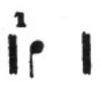
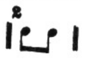
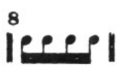
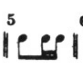
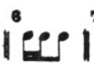
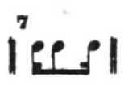

Sala São Paulo
Toque instrumentos, entenda a física por trás de cada nota e descubra a matemática escondida na orquestra — tudo em uma experiência, não em uma apresentação.
🎤 Edu · 01 — Origem
Toda vez que algo vibra, empurra o ar ao redor. Esse empurrão vira onda, a onda viaja, e quando chega ao seu ouvido, você chama isso de som.
🎤 Edu · 02 — Percurso
O ar não carrega o som inteiro — ele empurra a molécula vizinha, que empurra a próxima. São compressões e rarefações passando a informação adiante.
🎤 Edu · 03 — O centro de tudo
Cada naipe tem seu lugar. Clique em uma região do palco para se aproximar e conhecer os instrumentos daquele grupo.
Toque em uma área do palco
🎤 Edu · 04 — Família das Cordas
Comprimento, tensão e espessura decidem se a nota nasce grave ou aguda. Mexa nos controles e ouça a diferença em tempo real.
🎤 Gustavo · 05 — Família dos Metais
Quanto mais longo o caminho do ar, mais grave a nota. Adicione ou remova tubos e veja a coluna de ar mudar de tamanho.
🎤 Gustavo · 06 — Física invisível
Ar rápido empurra menos para os lados. Essa queda de pressão é o que puxa os lábios e as palhetas para dentro, criando a vibração.
🎤 Gustavo · 07 — Família das Madeiras
Embocadura livre, palheta simples e palheta dupla — cada uma inicia a vibração de um jeito diferente.
🎤 Gustavo · 08 — Família da Percussão
Toque em cada instrumento para ouvir, ver a vibração e saber se ele tem altura definida.
🎤 Gustavo · 09 — Um espectro só
Deslize e veja a orquestra inteira se reorganizar por frequência.
🎤 Igor · 10 — Por trás da nota
Nenhum instrumento é feito no olho. Por trás de cada corda, tubo e caixa acústica existe uma conta que decide onde furar, cortar ou esticar. A seguir, algumas aplicações matemáticas reais usadas na construção dos instrumentos.
É essa equação que o luthier usa para decidir o comprimento das cordas de um violino, violão ou piano, e a fábrica de cordas usa para escolher a espessura (μ) e a tensão (T) de cada fio de metal ou náilon. Mudar qualquer uma das três variáveis muda a nota — por isso instrumentos de tamanhos diferentes soam em oitavas diferentes.
Essa progressão geométrica de razão 12√2 é o que define, com precisão milimétrica, onde o fabricante posiciona cada traste de um violão ou cada tecla de um piano, garantindo que os 12 semitons dividam a oitava em partes matematicamente iguais.
Tubo aberto (flauta)
Tubo fechado (clarinete)
É essa razão entre velocidade do som e comprimento que determina o tamanho físico de cada sopro: por isso a tuba é enorme e grave, e o flautim é curto e agudo — o fabricante calcula L antes de dobrar um milímetro de metal.
O tempo de uma música também é matemática pura: o BPM (batidas por minuto) define quantos segundos dura cada batida, e as figuras musicais dividem essa batida em frações — mínima (1/2), semínima (1/4), colcheia (1/8), semicolcheia (1/16). É essa divisão que o metrônomo do luthier e do músico usam para afinar o instrumento no compasso certo.
| Figura | Fração | Duração |
|---|---|---|
| Mínima | 1/2 | — |
| Semínima | 1/4 | — |
| Colcheia | 1/8 | — |
| Semicolcheia | 1/16 | — |
Cada figura musical representa uma fração da mesma unidade de tempo. Juntas, elas formam a base matemática de qualquer partitura — e é a mesma matemática das batidas que você viu no bloco acima.

Figura1
Figura2
Figura3
Figura4
Figura5
Figura6Toda essa matemática constrói os mesmos instrumentos que você toca aqui embaixo. Interaja com a sala ao vivo — o botão "Trocar de sala" dentro da tela leva até a segunda sala.
🎤 Luiza · 11 — Na prática
A mesma disposição do palco, agora com cada instrumento no seu lugar exato.
🎤 Luiza · 12 — Teste-se
10 perguntas sobre som, instrumentos e física musical.
🎤 Luiza · 13 — Conclusão